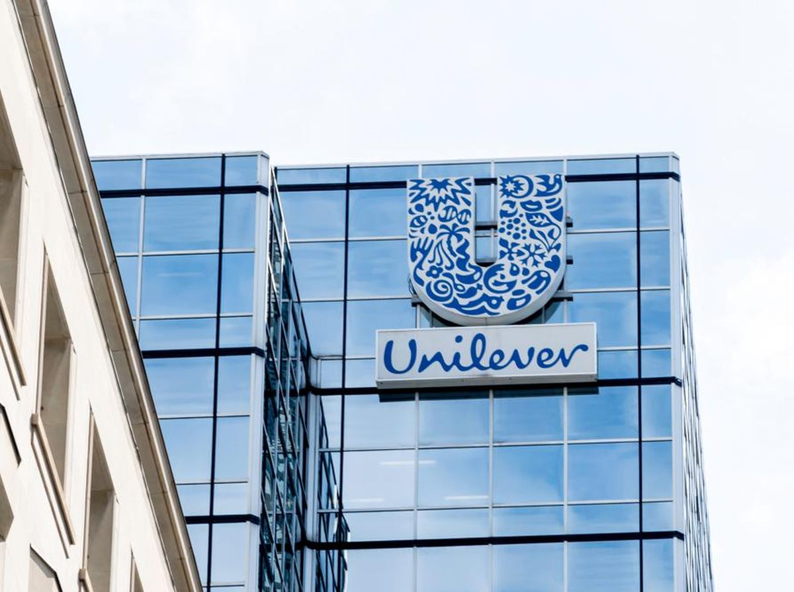

|  |
K E R J A
UnileverPengalaman saya bekerja di Unilever adalah salah satu momen yang paling berkesan dalam karir saya. Selama saya bekerja di sana, saya belajar banyak, mengembangkan keterampilan baru, dan menemukan makna dari bekerja dalam sebuah tim. Setiap orang di sana didorong untuk berkontribusi dan berbagi ide, tanpa memandang jabatan atau latar belakang. Saya merasa diterima dengan hangat dan segera menjadi bagian dari tim. Salah satu pengalaman terbaik saya di Unilever adalah ketika saya terlibat dalam proyek besar yang mengharuskan kerjasama tim lintas departemen. Kami diberi tanggung jawab untuk meluncurkan produk baru ke pasar, dan tugas ini menguji kemampuan kami untuk berkolaborasi, berinovasi, dan bekerja dengan efisien. Meskipun tantangan yang kami hadapi, kami berhasil menyelesaikan proyek dengan sukses, dan ini membuktikan kekuatan kerja tim yang solid dan visi bersama yang kuat. Selama bekerja di Unilever, saya juga mendapat kesempatan untuk terlibat dalam berbagai pelatihan dan pengembangan profesional. Perusahaan memberikan perhatian yang besar terhadap pertumbuhan karyawan dan selalu memberikan dukungan dalam pengembangan keterampilan dan pengetahuan. Saya belajar tentang manajemen waktu, komunikasi efektif, dan kepemimpinan yang inspiratif, yang semuanya sangat berharga bagi perkembangan karir saya. Namun, yang terpenting, pengalaman saya di Unilever mengajarkan saya tentang pentingnya membumikan nilai-nilai dalam setiap tindakan dan keputusan yang kita ambil. Unilever memiliki komitmen yang kuat terhadap keberlanjutan dan tanggung jawab sosial, dan nilai-nilai ini tercermin dalam semua aspek operasional perusahaan. Saya merasa bangga bisa menjadi bagian dari perusahaan yang peduli terhadap lingkungan dan masyarakat sekitar, dan ini memberi saya motivasi tambahan untuk bekerja dengan integritas dan dedikasi. Secara keseluruhan, pengalaman saya di Unilever tidak hanya mengubah karir saya, tetapi juga membentuk nilai-nilai dan prinsip-prinsip yang saya pegang dalam hidup. Saya bersyukur atas setiap pelajaran dan kesempatan yang saya dapatkan selama bekerja di sana, dan saya yakin bahwa pengalaman ini akan membekas dalam ingatan saya untuk selamanya. Kembali |